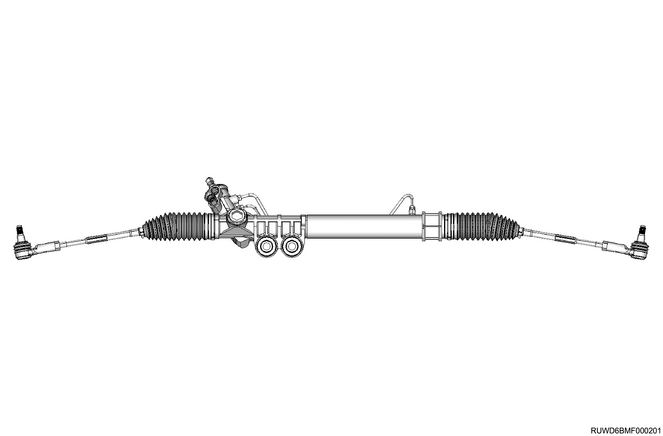

Overview
The hydraulic power steering system consists of a pump, oil reservoir, steering unit, pressure hose and return hose.
Power steering unit
The power steering unit is a rack and pinion type.
To adjust the toe-in angle, turn the rod located on each side. The steering housing cannot be disassembled.

Hydraulic pump
The hydraulic pump has a vane type design. The submerged pump has its housing and internal parts inside the reservoir, and operates with them sunk in the oil. There are two bore openings at the rear of the pump housing. The cam ring, pressure plate, thrust plate, rotor, vane assembly and end plate are located at the larger opening. The pressure line union, flow control valve and spring are located at the smaller opening.
The flow control orifice is a part of the pressure line union. The pressure relief valve located inside the flow control valve regulates the pump pressure.
Hydraulic pump (variable capacity)
4JJ1-TC Hi Power
Steering column
The steering column has 3 more important functions in addition to the steering function.
1. The column is designed to absorb energy to reduce the impact of the front-end collision, so that the risk of driver injury can be minimized.
2. The ignition switch and the lock are properly installed on the column.
3. By installing the lock onto the column, locking of the ignition and steering is possible for the prevention of vehicle theft.
The column can be disassembled and reassembled. Further, to guarantee energy absorbing operation, use the specified screw bolts and nuts, and tighten them to the specified torque. When removing the column from the vehicle, be careful when handling it. The fastener maintaining the column rigidity may be sheared or loosened if the tip of the steering shaft or shift lever is hit hard or the assembly is dropped.